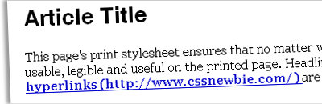

A print style sheet is an extremely useful thing to have around. Most modern websites don’t look all that attractive when printed using the site’s default CSS: overly-large widths, screen-friendly fonts, and creative color choices all work together to make most sites less than useful on the printed page. But with a print CSS file, you can alleviate those problems and present your users with a useable, useful print alternative to your digital masterpiece.
There can probably never be a true “boilerplate” print style sheet, something you can just apply to every website you create and be done — believe me, I’ve been trying to develop one for quite some time! However, this tutorial and accompanying downloadable template should help you on your way to building your own personally customized print CSS. And for some sites, it may not require any customization at all!
To start out, we’ll set some default widths, margins, floats, and backgrounds on our major elements:
body, #content, #container {
width: 100%;
margin: 0;
float: none;
background: #fff url(none);
}
How many times have you printed a website only to find the right third of the page was missing? Setting the width to 100% on these elements ensures they’ll never extend beyond the confines of the printed page. Setting a margin of zero ensures that our content hugs the default page margins – you can add more space here if you’d like. Setting our float to “none” helps get around some old-school print bugs, wherein floated objects weren’t printed beyond the first page. And setting our background to a default white with no image is just good printing karma – why waste your users’ ink on screen-centric niceties?
Next, we’ll remove any elements that aren’t needed on the printed page:
#topnav, #navbar, #nav, #sidebar, .ad, .noprint {
display: none;
}
Here, I’m suggesting that navigation, sidebars, and ads needn’t be printed. You can add to and remove from this list as your needs require. It also wouldn’t hurt to create a catch-all class (like .noprint) for individual elements you’d rather not be rendered on the printed page.
We should also set some default body font faces, sizes, and colors:
body {
font: 1em Georgia, "Times New Roman", Times, serif;
color: #000;
}
I’m setting the font-size here to 1em in order to keep the font size flexible. If you specify a point size (say, 12pt) or a pixel size, users won’t be able to use the “scale” functionality built into most modern browsers, which would make your pages less usable overall.
I’m also specifying a serif font for my print pages. Some argue that you should stick to whatever font you use on the screen for the sake of brand consistency, but I’d argue that you can develop screen brand consistency, and a separate print brand consistency. And if you’d like to interweave the two, consider using a serif font for your screen headlines and a sans-serif font for your body text, then simply reversing the font families on the printed page.
And finally, I’m setting the default text color to black. Your low-contrast design may look killer on the screen (who am I to judge?), but contrast is the name of the game on the page if you want your text to be legible.
Next up, we’ll style our headings:
h1,h2,h3,h4,h5,h6 {
font-family: Helvetica, Arial, sans-serif;
color: #000;
}
h1 { font-size: 250%; }
h2 { font-size: 175%; }
h3 { font-size: 135%; }
h4 { font-size: 100%; font-variant: small-caps; }
h5 { font-size: 100%; }
h6 { font-size: 90%; font-style: italic; }
I’m specifying a default font-family as well as a color (black again) for all of my headlines. Then, I’m styling each headline uniquely so that they stand out hierarchically on the printed page. Most websites don’t actually use six levels of headings, so you can change these around and eliminate lines to suit your needs.
And finally, we need to ensure that hyperlinks are usable in print:
a:link, a:visited {
color: #00c;
font-weight: bold;
text-decoration: underline; }
#content a:link:after, #content a:visited:after {
content: " (" attr(href) ") ";
}
The first set of rules sets our links to be dark blue, so they show up as blue on color printers and a dark grey (but not black) in grayscale. We’ve also made them bold and underlined them to ensure they stand out from the rest of the page.
But what good is highlighting your hyperlinks on the page? It’s not like anyone can follow them, right? Well, that’s mostly true. But by using a little advanced CSS magic, we can make the anchor tags on your page a lot more useful. Using the :after pseudo-class and the content property, we can actually append the achor’s href to our hyperlink text. Now your users will be able to distinguish your links from the rest of your text, and even “follow” them (albeit manually) if they’d like. This trick doesn’t work in Internet Explorer, sadly… but it doesn’t do any harm to have the rule in there for the browsers who can use it.
And there you have it! A default print stylesheet template. If you’d like to download a copy to use, just click here (right-click and save as). Of course, this solution would work a lot better with a bit of customization, so feel free to change it up as you see fit.
It would be great if this site used a print style!
Thanks for the reminder, Terri! I have a bit of a print stylesheet for CSSnewbie, but I forgot to make it live. :) It isn’t much — isn’t even as fancy as the one I talk about in today’s tutorial — but I think it helps a bit.
Great post, it is very easy to fix the print layout with css. I created CSS Framework for web printing. If you want take a look at: http://code.google.com/p/hartija/
thanks rob & vladimir, very useful
Pingback: diarioTHC | Hoja de estilos para impresión
Pingback: links for 2008-06-14 « Richard@Home
I wish more sites included a print style. Far too often developers put all their effort into the front end view, but neglect the details like a print style sheet. I use common elements through out all my sites similar to the ones you describe that allow me to quickly build a print style based off a snippet that I have saved. It really helps speed development time up. Great article.
Pingback: CSS樣式架構[3] 全站共用型 (Common)：通用樣式、其他框架樣式與列印樣式 - 樂倍達數位科技
Thanks for that, a very helpful starting point :-)
What are the W3C recommended page-break-before and page-break-after rules for h1, h2, ol and ul? I can’t find the answer.
very useful information for a default printsheet template
Template